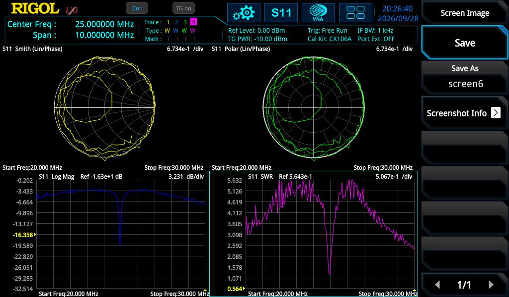
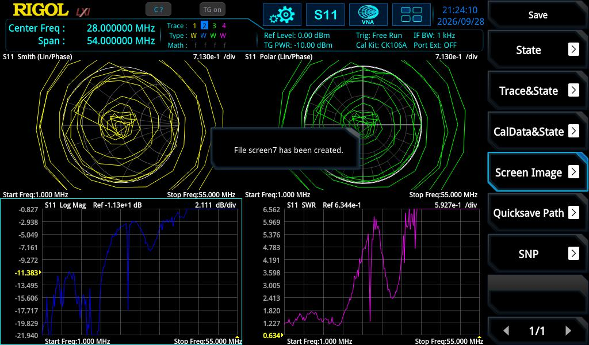
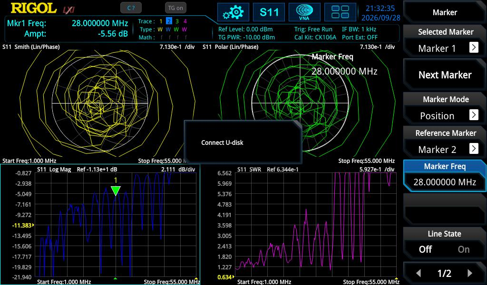
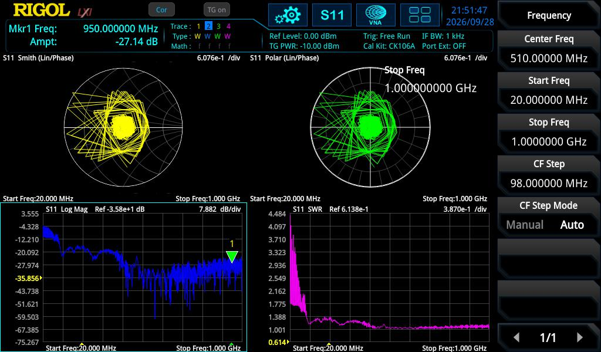
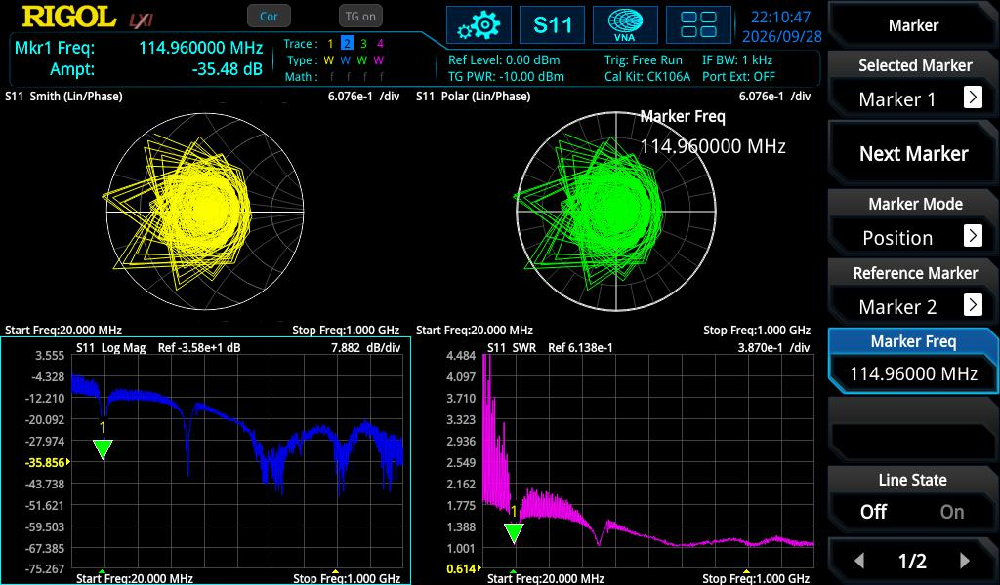

— and why a great SWR isn't a great antenna
Four coax feedlines come into the shack, and after installing a new HF-360 XP (a 1 kW fibreglass vertical, "80–10 m") I was no longer sure my labels were right. The four were supposed to be:
| Cable | Labelled | Notes |
|---|---|---|
| 1 | Discone | wideband scanner/VHF-UHF |
| 2 | Air-band | VHF/UHF, spec: 108–140 MHz + 220–400 MHz |
| 3 | HF-360 XP | new end-fed vertical, 80–10 m (3.5–30 MHz), "1.1:1 with ATU" |
| 4 | 40 m long wire | ~40 m end-fed, normally on the Icom IC-7610 |
What set off the alarm: I put the "new HF-360" on the VNA and the S11 plot made no sense — nothing like the tidy 1.1:1-across-all-bands table on the box.

The whole job was done with S11 (return loss / SWR) reflection measurements on the Rigol RSA5065N's VNA mode, TG power −10 dBm, CK106A cal kit. Below is how each cable was fingerprinted — and the answer, which was not what I expected.
| Rig | Icom IC-7610 — ANT1 = 40 m long wire, ANT2 = HF-360 XP |
| HF-360 XP | 1 kW fibreglass vertical, 5.5 m, rated 80–10 m (3.5–30 MHz), 4:1 unun at the base |
| HF-360 install | roof-mounted, 2 m fibreglass pole, Sigma Plus kit loaded radials (80 m + 40 m) laid out as an inverted T, common-mode choke ~2 m down the coax |
| HF-360 feeder | ~30 m RG-213 |
| Long wire feeder | ~20 m RG-213 to the shack, common-mode choked at the shack end |
| Instrument | Rigol RSA5065N, VNA/S11 mode, TG power −10 dBm, CK106A cal kit |
The HF-360's spec table (1.1:1 on every band) is measured through an ATU. On a bare VNA you see the antenna's raw feedpoint match, which for any multiband end-fed is a set of resonances with high SWR between them. The tuner is what squashes that to 1.1:1 at the radio.
Widening the sweep to 1–55 MHz shows the real signature — and it isn't what I first thought. My first read was "a comb of resonances landing on the ham bands." Looking properly at the trace, that's wrong: it's a broad, low-SWR plateau running from about 1 to 15 MHz (S11 roughly −11 to −22 dB, SWR ≈1.2–1.8), rising to a poor match above about 16 MHz, with one narrow dip near 24.9 MHz and a broader dip near 32 MHz.
Marker minimum-search + spot readings on that plateau (S11 Log Mag):
| Band | Freq | S11 | SWR |
|---|---|---|---|
| 80 m | 3.43 MHz | −30.6 dB | ≈1.06 |
| 40 m | 7.0 MHz | −13.9 dB | ≈1.5 |
| 20 m | 14.0 MHz | −19.5 dB | ≈1.2 |
| 10 m | 28.0 MHz | −4.3 dB | ≈4.2 (raw) |
These are spot readings on the plateau, not resonance minima — at 7.0, 14.0 and 28.0 MHz the trace is simply passing through those frequencies, not dipping to a local minimum there. S11 = −30.6 dB at 3.43 MHz means a return loss of 30.6 dB — the deepest, cleanest point on the whole sweep.
That 3.43 MHz dip is real and it's the deepest thing on the trace, but I can't be fully sure why it's there — it's possibly the 80 m loaded radial from the Sigma Plus kit doing exactly what a loaded radial does, rather than a property of the vertical element itself.

Same 1–55 MHz sweep, completely different fingerprint: a dense, regular comb that runs all the way to 55 MHz, with the dips sitting between the amateur bands rather than on them.
For an end-fed wire, adjacent half-wave resonances are spaced by:
Δf = (c · vf) / (2 · L) → L = (c · vf) / (2 · Δf)
With Δf = 3.5 MHz and velocity factor vf ≈ 0.95:
L = (3×108 · 0.95) / (2 · 3.5×106) ≈ 40.7 m
→ ~40 metres of wire (remembering the feeder caveat above — this is antenna and ~20 m of feeder run together, so the true radiating length is somewhere under that figure). A bare wire has no upper band limit, so it keeps resonating past 30 MHz to 55 MHz — exactly what we see, and the opposite of the band-limited HF-360.

Here's the thing that actually bothered me once I'd read the HF-360 plot correctly. On 80 m, the whole antenna — 5.5 m of fibreglass vertical — is electrically tiny: roughly 1/15th of a wavelength. A vertical that short should have very low radiation resistance and a lot of capacitive reactance. It should look reactive and badly matched at the feedpoint, not smooth and well-behaved.
Instead the raw sweep shows a broad, gently-varying, genuinely-good match (SWR ≈1.2–1.8) across 1–15 MHz — no sharp resonance, no obvious tuning peak, just an easy ride the whole way. For a physically tiny antenna, a match that broad and that forgiving is not what "well radiating" normally looks like. It's much more consistent with something in the system — the 4:1 unun, the loaded-radial counterpoise, the ~30 m of feeder — quietly absorbing power as loss rather than the antenna radiating it.
| HF-360 XP | 40 m long wire | |
|---|---|---|
| S11 signature | broad, lossy-looking plateau, ~1–15 MHz; poor above ~16 MHz | regular ~3.5 MHz comb, continuing to 55 MHz |
| Rated range | 3.5–30 MHz | no fixed limit — bare wire, resonates wherever its length dictates |
A purpose-built, band-limited antenna and a random length of wire look nothing alike once you sweep wide enough: one rolls off where it's designed to, the other just keeps going.
A discone lives in VHF/UHF, so the sweep was opened to 20 MHz – 1 GHz. First attempt threw an obvious error:
At 50 MHz the marker read S11 = +5.9 dB. That is physically impossible for a passive antenna (|S11| can't exceed 1, i.e. 0 dB). The cause: the CK106A calibration had been done at 20–30 MHz, so everything up in VHF/UHF was uncalibrated extrapolation.
| Freq | S11 | SWR |
|---|---|---|
| 30 MHz | −10.1 dB | ≈1.9 |
| 130 MHz | −20.5 dB | ≈1.2 |
| 435 MHz | −27.1 dB | ≈1.09 |
| 570 MHz | −69.6 dB | ≈1.0 |
| 950 MHz | −27.2 dB | ≈1.09 |
−69.6 dB at 570 MHz isn't a special property of the antenna — it's a coincidental near-perfect match at that exact frequency. Anywhere deeper than about −40 dB is really at the limit of what the instrument and calibration can resolve; treat numbers beyond that as "very well matched," not as a precise figure.
Well-matched (SWR < 2) from ~30 MHz all the way to 1 GHz, with no single resonance — matched everywhere. That is the textbook discone signature, and the opposite of a resonant whip.

On the same calibration, this one shows two distinct matched bands with mismatch between them — matching the spec (VHF 108–140 MHz + UHF 220–400 MHz):
| Band | Freq | SWR | ≈ S11 |
|---|---|---|---|
| VHF (108–140) | 113.24 MHz | 1.07 | ≈ −29 dB |
| VHF (108–140) | 114.96 MHz | 1.04 | −34.4 dB (measured) |
| UHF (220–400) | 364.12 MHz | 1.02 | ≈ −40 dB |
There's also an incidental match near 965 MHz, SWR ≈1.0 — a higher-order sweet spot outside the rated bands.
Two clean bands = a dual-band VHF/UHF antenna (the air-band 108–137 MHz sits inside its VHF range). Confirmed.

Mid-measurement the marker was reading off the SWR trace while being interpreted as Log Mag (dB). An SWR of ~1.0 (a great match) got misread as "+1 dB return loss / open circuit." The tell: SWR and Log Mag are both derived from the same S11 but have completely different scales and signs.
:CALCulate:MARKer:TRACe?) before quoting numbers. Log Mag is negative dB; SWR is a ratio ≥1. They are not interchangeable.
The VNA sweep is one kind of evidence. So I put both HF antennas on the IC-7610 the same evening and just listened.
That 20 m result needs unpacking, because "lower noise floor" sounds like a win and on its own it isn't one. A less efficient antenna doesn't just quiet the band noise — it quiets everything it hears, wanted signals included, by roughly the same amount. A lower noise floor from a lossy antenna is not a better receiver; it's a receiver hearing less of everything. The fair test isn't "which antenna is quieter," it's signal-to-noise on the same station — and on 20 m that came out about equal, marginal on both. Combined with 80 m being essentially dead on the HF-360, that's consistent with the loss story in the previous section, not against it.
Next: a proper WSPR head-to-head on the IC-7610's two receivers, running both antennas simultaneously against the same signals over the same hours — Station Surveys #3.
| Cable | Label | Measured signature | Verdict |
|---|---|---|---|
| 1 | Discone | Broadband SWR <2, ~30 MHz → 1 GHz | ✅ correct |
| 2 | Air-band | Matched 108–140 & 220–400 MHz | ✅ correct |
| 3 | HF-360 XP | Broad plateau 1–15 MHz, poor above ~16 MHz | ✅ correct |
| 4 | 40 m long wire | ~40 m comb (Δf 3.5 MHz), off-band, to 55 MHz | ✅ correct |
The scare was a measurement-expectation mismatch, not a cabling mix-up: the HF-360's raw S11 looked nothing like its with-ATU spec sheet, which sent me second-guessing all four feedlines. What it actually turned up instead was more interesting than a mislabelled cable — a hint that the "great match" on the new vertical is doing that by losing power, not radiating it.
L = c·vf / (2·Δf) — remembering this includes the feeder.Bench notes · 2026-09-28 · Rigol RSA5065N · CK106A cal kit
WSPR head-to-head on the IC-7610's two receivers, long wire vs HF-360.